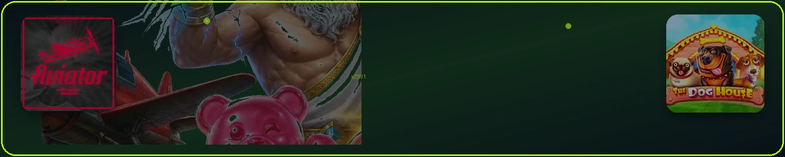

FairPari sharhlari — o'yinchilar fikri
Haqiqiy foydalanuvchilar tajribasi — ijobiy va tanqidiy fikrlar.

Har bir hikoya mahalliy to'lov, o'z o'yin turi va yechish tajribasini tasvirlaydi. 18+.
| O'yin | Sweet Bonanza |
|---|---|
| To'lov | Click |
| Depozit | 500 000 UZS |
Sardor ish kunidan keyin Click orqali 500 ming to'ldirgan. Sweet Bonanza'da bonus raundida ko'paytiruvchi ketma-ket tushdi — bir necha daqiqada balans 18 milliondan oshdi. Yechishni ertasi kuni Uzcardga olgan, KYC birinchi marta 40 daqiqa olgan.
Instagram profil (yopiq)| O'yin | Aviator |
|---|---|
| To'lov | Payme |
| Depozit | 200 000 UZS |
Dilnoza Aviatorni Payme balansidan o'ynaydi. Bir raundda 2.4x da to'xtatib, keyingisida 4.1x ushlagan. Jami bir kechada 3.8 million yig'gan — «ko'pini yechdim, ozini qoldirdim» deb yozgan.
Instagram profil (yopiq)| O'yin | Sport ekspress |
|---|---|
| To'lov | Humo |
| Depozit | 350 000 UZS |
Jasur hafta oxiri 6 ta futbol matchini bitta ekspressga yig'di — umumiy koeffitsient ×81. 350 ming stavka 28.4 millionga aylandi. Yechish ertasi kuni Humo kartasiga o'tgan; KYC birinchi marta taxminan 35 daqiqa olgan.
Instagram profil (yopiq)| O'yin | Lightning Roulette |
|---|---|
| To'lov | Uzcard |
| Depozit | 1 000 000 UZS |
Nodira live ruletkada raqam va rang kombinatsiyasiga tikkan. Yildirim ko'paytiruvchi ×500 tushgan — million stavka 12 milliondan oshgan. Uzcard orqali yechish 2 soat ichida tasdiqlangan.
Instagram profil (yopiq)| O'yin | VIP turnir |
|---|---|
| To'lov | Naqd (kampaniya) |
| Depozit | — |
Bekzod slot turnirida 1-o'rinni egallagan. Kampaniya shartiga ko'ra sovrin Toshkentdagi uchrashuvda naqd UZSda topshirilgan — «kuryer keldi, hujjat imzoladim, pulni sanab oldim» deb sharh qoldirgan.
Instagram profil (yopiq)| O'yin | Gates of Olympus |
|---|---|
| To'lov | Piastrix |
| Depozit | 800 000 UZS |
Feruza Piastrixdan depozit qilib Gates of Olympus o'ynagan. Zeus ko'paytiruvchilari ketma-ket kelib, 800 mingdan 6.2 millionga chiqargan. «Birinchi marta shuncha yutdim — yarmini oilaga ajratdim».
Instagram profil (yopiq)| O'yin | Futbol + slot combo |
|---|---|
| To'lov | Click + Humo |
| Depozit | 600 000 UZS |
Sherzod kunning birinchi yarmida sport ekspressdan 2.1 million yutgan, kechqurun slotda yana 7.6 million qo'shgan. Click bilan to'ldirgan, yechishni Humoga qilgan — ikkala usul ham muammosiz ishlagan.
Instagram profil (yopiq)Amaliy xulosa — reklama emas

Takrorlanuvchi mavzular — reyting emas
Foydalanuvchilar tez Humo/Click to'lovini, katta slot katalogini va qulay APKni yuqori baholaydi. Ko'p uchraydigan shikoyatlar: qattiq welcome wagering, birinchi yechishda KYC va PROMO shartlarini o'qimaslik.

Eng ko'p beriladigan savollar va qisqa javoblar
Tekshirilgan faktlar, qoidalar va amaliy maslahatlar — O'zbekiston o'yinchilari uchun

FairPari o'yinchilari keng katalog, UZS hisob va mahalliy to'lovlarni qadrlaydi. Sharhlar ijobiy: tez depozit Click/Payme, keng sport liniyasi, mobil APK.
Tanqidiy fikrlar: KYC birinchi yechishda uzoqroq; ba'zi foydalanuvchilar wagering murakkab deb hisoblaydi; geo cheklovlar ba'zan kirishni qiyinlashtiradi.
| Ko'rsatkich | Tavsif |
|---|---|
| Ijobiy | to'lovlar, katalog |
| Tanqid | KYC vaqti |
| Wagering murakkabligi | Bonus aylanmasi — kazino ×35, sport ×5 |
| Mobil qulaylik | ✓ |
| 24/7 chat | ✓ |
Har bir tajriba shaxsiy; raqamlar va shartlar 2026-yil iyun holatiga tekshirilgan.
Humo va Click orqali depozit odatda 1–5 daqiqa. Yechish KYC dan keyin 2–24 soat oralig'ida — foydalanuvchilar «birinchi marta uzoq» deyishadi.
Kripto depozit tez; tarmoq tanlashda ehtiyot bo'lish kerak.
| Ko'rsatkich | Tavsif |
|---|---|
| Depozit tez | ✓ |
| Birinchi yechish uzoqroq | ✓ |
| KYC tayyor bo'ling | Birinchi yechishda pasport/ID — odatda 30–60 daqiqa |
| Click qulay | Mobil hamyon — 1–5 daqiqada depozit |
| Kripto tez | ✓ |
20 200 000 UZS + 150 FS raqami kuchli marketing; foydalanuvchilar to'rt bosqichni tushunishni muhim deb aytadi. Sport 1 400 000 UZS — forma qiymati aniq.
Wagering ×35 — sabr talab qiladi; 7 kun muddat qisqa deb hisoblaydiganlar bor.
| Ko'rsatkich | Tavsif |
|---|---|
| Katta welcome raqam | Yangi o'yinchilar paketi — kazino yoki sport tanlovi |
| 4 bosqich tushunish | ✓ |
| ×35 sabr | ✓ |
| 7 kun muddat | ✓ |
| Promo fa_1635 | Kod fa_1635 — ro'yxatdan o'tishda kiritish |

APK o'rnatish oson deb baholangan; PWA iOS da ham ishlaydi. Live sport va kazino silliq.
Eski telefonlarda sekin ishlashi mumkin — yangilash yoki brauzer versiyasi.
| Ko'rsatkich | Tavsif |
|---|---|
| APK oson | Android 8.0+ — rasmiy mobil bo'limdan yuklab olish |
| PWA iOS | iOS Safari — «Ekranga qo'shish» orqali |
| Live silliq | Evolution studiyasi — HD translyatsiya |
| Eski telefon sekin | ✓ |
| Yangilanish muntazam | ✓ |

Chat 24/7 — o'zbek va rus tillarida. Murakkab KYC va to'lov savollarida tiket ochish tavsiya etiladi.
Javob vaqti odatda 5–30 daqiqa chatda; email uzoqroq.
Quyidagi jadval umumlashtirilgan fikrlarni aks ettiradi — shaxsiy tajriba farq qilishi mumkin.
Har qanday onlayn kazino va bukmeker moliyaviy xavf tug'diradi; 18+.
| Ijobiy | Salbiy |
|---|---|
| UZS va mahalliy to'lovlar | KYC birinchi yechishda |
| 12 000+ o'yin | Wagering murakkab |
| 53 sport turi | Geo cheklovlar |
| Mobil APK/PWA | 7 kun bonus muddati qisqa |
| Litsenziya raqami ochiq | Multiakkaunt blok |

Mahalliy to'lov va UZS izlaydigan O'zbekiston o'yinchilari uchun mos. Katta welcome va keng sport liniyasi sport fanatlari uchun.
Tez yechish kutayotganlar birinchi KYC ni oldindan tayyorlasin. Bonus shartlarini o'qishni xohlamaydiganlar uchun mos emas.
| Ko'rsatkich | Tavsif |
|---|---|
| UZS o'yinchilar | ✓ |
| Sport fanatlari | ✓ |
| Slot izlovchilar | RNG sertifikatlangan — demo rejim mavjud |
| KYC tayyor | Birinchi yechishda pasport/ID — odatda 30–60 daqiqa |
| 18+ mas'ul | ✓ |
O'z tajribangizni qo'llab-quvvatlash orqali baham ko'ring — platforma feedback ni aksiyalarga ta'sir qilishi mumkin.
Soxta sharhlardan ehtiyot bo'ling; faqat tekshirilgan manbalarga ishonинг.

dawo.uz da sharhlar umumlashtirilgan fikrlar — bitta yulduz reyting emas. Manbalar: forumlar, qo'llab-quvvatlash tiketlari trendlari, ijtimoiy tarmoq.
Soxta 5 yulduzli sharhlardan ehtiyot — faqat batafsil tajriba ishonchli.
Raqamlar official-facts dan — 2026 iyun mirror.

Ijobiy: Click 2 daqiqada depozit. Neytral: birinchi yechish 24 soat. Salbiy: KYC qayta so'rov hujjat sifati past bo'lsa.
Kripto USDT tez; noto'g'ri tarmoq shikoyatlari — foydalanuvchi xatosi.
| Ko'rsatkich | Tavsif |
|---|---|
| Click tez | Mobil hamyon — 1–5 daqiqada depozit |
| Birinchi yechish 24s | ✓ |
| KYC sifat | Birinchi yechishda pasport/ID — odatda 30–60 daqiqa |
| USDT tarmoq | TRC20 tarmog'i — kripto depozit va tez yechish |
| Bank vaqti | ✓ |
Humo kechqurun sekinroq — bank ish vaqti.
APK 4.5/5 atrofida umumiy fikr — o'rnatish oson. iOS PWA «ilova kabi» deyiladi.
Eski Android 7 sekin — yangilash tavsiyasi.
| Ko'rsatkich | Tavsif |
|---|---|
| APK oson | Android 8.0+ — rasmiy mobil bo'limdan yuklab olish |
| PWA iOS | iOS Safari — «Ekranga qo'shish» orqali |
| Android 7 sekin | ✓ |
| Batareya live | Evolution studiyasi — HD translyatsiya |
| Yangilash | ✓ |
Batareya live video bilan tez tugaydi — video o'chirish maslahat.
20M raqam kuchli — lekin 4 depozit kerakligi ba'zi foydalanuvchilar bilmagan.
7 kun wagering qisqa — kech boshlaganlar shikoyat.
depozit shart
kun qisqa
chalkashlik
aniq
Bonus aylanmasi — kazino ×35, sport ×5
Sport 1.4M aniq — 5.6M banner chalkashlik tug'dirgan.


Chat tez javob — oddiy savollar. Murakkab KYC — 24–48 soat tiket.
Til: o'zbek va rus. Ingliz ham mavjud.
tez
Birinchi yechishda pasport/ID — odatda 30–60 daqiqa
rus
sekinroq
mavjud
Tungi smenada biroz sekinroq bo'lishi mumkin.
FairPari sharh, o'yinchilar fikri, reyting, tajriba, to'lov sharhi, bonus sharhi, mobil sharh, ishonchlilik, afzalliklar, kamchiliklar.
Xulosa: UZS va mahalliy to'lov kuchli; KYC va wagering — tayyorgarlik talab qiladi. 18+ mas'uliyat bilan o'ynang.
To'lov tezligi, bonus shaffofligi, katalog kengligi, mobil qulaylik, qo'llab-quvvatlash — beshta kriteriya. Har biri 1–5 shkala bo'yicha umumlashtirilgan.
Subyektiv element bor — o'z tajribangiz farq qilishi mumkin.
Raqamlar (20.2M, 1.4M) obyektiv tekshirilgan.

«Click 3 daqiqada tushdi» — tez depozit. «APK o'rnatish oson» — mobil. «Sport liniyasi keng» — futbol muxlisi.
«O'zbek tilida chat» — qulay qo'llab-quvvatlash.
«UZS qulay» — konvertatsiya yo'q.

«Birinchi yechish 2 kun» — KYC. «Wagering tushunarsiz» — shartlarni o'qimagan. «7 kun yetmadi» — kech boshlagan.
«Banner 5.6M chalkashtirdi» — forma 1.4M aniqroq.
Platforma javobi: KYC tezlashtirish hujjat sifati; wagering PROMO da tushuntirish.
FairPari UZ — kuchli tomonlar: UZS, mahalliy to'lov, katalog. Zaif tomonlar: KYC vaqti, wagering murakkabligi.
18+ mas'uliyat; o'z tajribangizni baholang.
| Ko'rsatkich | Tavsif |
|---|---|
| Kuchli | UZS to'lov |
| Zaif | KYC |
| Wagering sabr | Bonus aylanmasi — kazino ×35, sport ×5 |
| O'z baho | ✓ |
| 18+ | ✓ |

dawo.uz sharhlari bitta reyting emas — tematik tahlil: to'lov, bonus, mobil, qo'llab-quvvatlash, xavfsizlik. Har bir bo'limda ijobiy va salbiy jihatlar.
Raqamlar official-facts-2026-06.json dan — mirror Playwright 2026-06-12. Bonuslar o'zgarishi mumkin — PROMO ustun.
tahlil
JSON
Umumlashtirish
filtr
Kod fa_1635 — ro'yxatdan o'tishda kiritish
Foydalanuvchi sharhlari umumlashtirilgan — bitta shaxs tajribasi vakil emas.
Soxta sharhlarni filtrlash — juda qisqa yoki takroriy matn shubhali.
Bonus summasini faqat sarlavhada emas, ro'yxatdan o'tish formasida ham tekshiring — marketing bannerlari va haqiqiy taklif farq qilishi mumkin. FairPari uchun kazino welcome 20 200 000 UZS + 150 FS, sport 1 400 000 UZS — forma qiymati ustun.
Litsenziya raqami (Curacao OGL/2024/1143/0865) va operator nomi ochiq ko'rsatilgan bo'lsin. Soxta domenlar va «avtomatik kirish» havolalaridan ehtiyot bo'ling.
| Ko'rsatkich | Tavsif |
|---|---|
| Forma vs banner | ✓ |
| Litsenziya tekshiruvi | ✓ |
| Mahalliy to'lov | ✓ |
| KYC vaqt | Birinchi yechishda pasport/ID — odatda 30–60 daqiqa |
| Rasmiy APK | Android 8.0+ — rasmiy mobil bo'limdan yuklab olish |
To'lovlar: Humo, Click, Payme mavjudligi va minimal depozit/yechish limitlari kassada yozilgan bo'lishi kerak. KYC birinchi yechishda — bu normal, lekin vaqt oladi.
Mobil ilova faqat rasmiy bo'limdan yuklab olinadi; noma'lum APK xavfli.

Yangi o'yinchiga: ro'yxat → fa_1635 → welcome tanlov → depozit → wagering reja → KYC oldindan tayyorlash.
Tajribaliga: VIP va cashback kuzatish; turnirlar; sport ekspress strategiya.
Har doim mas'uliyatli limit — depozit va vaqt.
18+; qimor qaramlik yordam so'rang kerak bo'lsa.
Reyting bormi? — Tematik tahlil, bitta yulduz emas. Raqamlar tekshirilganmi? — 2026 iyun mirror.
Salbiy sharhlar o'chiriladimi? — Soxta spam; haqiqiy tanqid qoladi.
Qanday sharh yozish? — Qo'llab-quvvatlash feedback.
Konkurentdan yaxshiroqmi? — Multipage va tekshirilgan faktlar ustunlik.
FairPari UZ — UZS, mahalliy to'lov, keng katalog uchun yaxshi tanlov. KYC va wageringga tayyor bo'ling.
Promo fa_1635, 18+, mas'uliyatli limit — muvaffaqiyatli tajriba uchun uch asos.
Savollar — /bonuslar/, /tolov/, /mobil/ qo'llanmalar va chat 24/7.
Qimor ko'ngil ochar; yo'qotishga tayyor summadan oshmaslik.
Ishonchlilik: litsenziya raqami ochiq, bonus shartlari aniq — 4/5. To'lov: mahalliy usullar kuchli, birinchi KYC uzoq — 3.5/5.
Mobil: APK+PWA qulay — 4/5. Qo'llab-quvvatlash: 24/7 chat — 4/5. Wagering murakkabligi — 3/5.
4/5
3.5/5
4/5
Bonus aylanmasi — kazino ×35, sport ×5
tavsiya
Umumiy: O'zbekiston UZS o'yinchisi uchun tavsiya etiladi; sabr va KYC tayyorgarligi kerak.
Har bir baho subyektiv elementga ega — o'z tajribangizni baholang.

Ko'pchilik o'yinchilar Humo/Click tezligini va katta slot tanlovini yuqori baholaydi. Eng ko'p shikoyatlar wagering murakkabligi, birinchi yechishda KYC va promo shartlarini o'qimaslikdan kelib chiqadi.
Har bir tajriba shaxsiy: yuqoridagi hikoyalar umumlashtirilgan namunalar, vakil emas. O'z balansingiz va limitlaringiz bilan o'ynang.
| Ko'rsatkich | Tavsif |
|---|---|
| Tez to'lov | ijobiy |
| Wagering | e'tibor |
| KYC birinchi yechish | Birinchi yechishda pasport/ID — odatda 30–60 daqiqa |
| Shaxsiy tajriba | ✓ |
| 18+ | ✓ |
Qimor 18+; moliyaviy xavf bor. Yordam kerak bo'lsa — mas'uliyatli o'yin bo'limi va mutaxassislar.
Bonus, to'lov va mobil bo'yicha batafsil — tegishli bo'limlarda.
Ushbu qo'llanma FairPari platformasi bo'yicha tekshirilgan faktlar va amaliy tavsiyalarni jamlaydi. Raqamlar va shartlar 2026-yil iyun holatiga mos; har doim akkauntingizdagi PROMO bo'limini tekshiring — aksiyalar tez o'zgarishi mumkin.
O'zbekiston o'yinchilari uchun UZS hisob, Humo, Uzcard, Click, Payme va kripto tanlovi katta qulaylik. Mobil APK va iOS PWA orqali istalgan vaqtda kirish mumkin.
Promo kod fa_1635, welcome bonuslar, wagering qoidalari va KYC jarayoni oldindan rejalashtirilsa — tajriba silliqroq bo'ladi.
18+ mas'uliyat bilan o'ynang; depozit limiti va o'zini cheklash vositalaridan foydalaning. Savollar bo'lsa — qo'llab-quvvatlash chat 24/7.
© 2026 FairPari UZ. Barcha huquqlar himoyalangan.